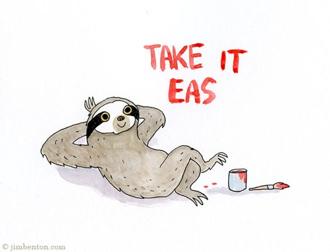

About Sloths
The sloth is the world's slowest mammal, so sedentary that algae grows on its furry coat. The plant gives it a greenish tint that is useful camouflage in the trees of its Central and South American rain forest home.
Sloths are identified by the number of long, prominent claws that they have on each front foot. There are both two-toed and three-toed sloths.
All sloths are built for life in the treetops. They spend nearly all of their time aloft, hanging from branches with a powerful grip aided by their long claws. (Dead sloths have been known to retain their grip and remain suspended from a branch.) Sloths even sleep in trees, and they sleep a lot—some 15 to 20 hours every day. Even when awake they often remain motionless. At night they eat leaves, shoots, and fruit from the trees and get almost all of their water from juicy plants.
Sloths mate and give birth while hanging in the trees. Three-toed sloth babies are often seen clinging to their mothers—they travel by hanging on to them for the first nine months of their lives.
On land, sloths' weak hind legs provide no power and their long claws are a hindrance. They must dig into the earth with their front claws and use their strong front legs to pull themselves along, dragging their bellies across the ground. If caught on land, these animals have no chance to evade predators, such as big cats, and must try to defend themselves by clawing and biting.
Though they couldn't be clumsier on land, sloths are surprisingly good swimmers. They sometimes fall directly from rain forest trees into rivers and stroke efficiently with their long arms.